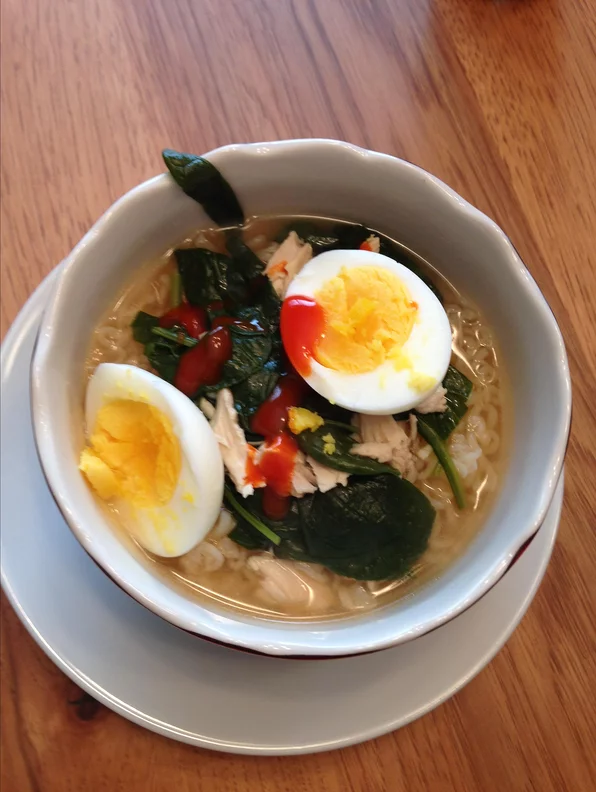

Spicy chicken ramen

Easy, spicy chicken ramen noodle soup with eggs
4 Servings
- 4 eggs
- 6 cups chicken stock
- 2 cups fresh spinach
- 2 tablespoons soy sayce
- 2 tablespoons sriracha sauce
- 1 tablespoon rice vinegar
- 2 gloves garlic, grated
- 1 (1 inch) piece ginger, grated
- 1 (12 ounce) package ramen noodles
Toppings:
- 1 cup finely crumbled dried seaweed, or to taste
- 4 green onion,chopped, or to taste
- 2 Thai chile peppers, stemmed and coarsely chopped, or to taste
- 2 tablespoons sriracha sauce, or to taste
Steps
- Bring a small pot of water to a boil. Reduce heat to low and gently lower eggs into the water. Cook for 8 minutes. Remove eggs from hot water, cool under cold running water, and peel.
- Combine chicken stock, chicken meat, spinach, soy sauce, sriracha sauce, rice vinegar, garlic, and ginger in a large pot. Simmer until heated through, about 10 minutes.
- Meanwhile, bring a saucepan of water to a boil. Cook ramen noodles for 3 minutes. Drain.
- Ladle noodles into bowls and cover with soup. Add 1 soft-boiled egg to each bowl. Garnish soup with seaweed, green onions, chile peppers, and sriracha sauce.